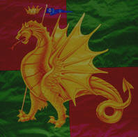

RISALE AL 1494 LA PRIMA APPARIZIONE NELLE FESTE
Tratto dal supplemento "Speciale Palio di Siena" de "La Nazione" del 15 agosto 2004
La Contrada del Drago fu fra le
prime a comparire sul
Campo nelle pubbliche feste.
Insieme a
Giraffa, Chiocciola e
Onda partecipa ad una
«Pugna», organizzata
in onore del cardinale
St.Malò nel 1494.
La
Contrada comprende
le antiche Compagnie
Militari di San Donato da’ Montanini e
Sant’Egidio del Poggio Malavolti.
Dall’animale mitologico rappresentato sullo
stemma della prima
prese probabilmente
insegna e nome.
Taluni credono invece possibile che il nome e
l'insegna possano derivare dall’arma gentilizia dei Borghesi: un
drago giallo in campo
verde: altri che abbia
ripreso l’emblema da quello della famiglia Benincasa, la famiglia
di Santa Caterina, che è anche la sua Patrona.
Comunque sia, fu proprio una macchina a foggia di Drago che
gli appartenenti a questa Contrada parteciparono alle prime
«cacce ai tori» e furono chiamati «gli uomini del Drago».
Fino alla metà del
17esimo secolo i dragaioli tennero le proprie adunanze in
abitazioni private o in botteghe del rione, mentre a partire
dal Settembre 1650 fu loro
concesso di adunarsi
presso la cappella della Compagnia Laicale
di San Domenico in
Camporegio che, dal
1679, si impegnò addirittura a contribuire alle spese sostenute in
occasione del Palio, purchè il premio, in caso di vittoria, venisse offerto
all'altare di San Domenico.
Questa collaborazione durò quasi cento anni ed ebbe termine dopo la vittoria
del palio del 2 luglio 1738.
Da questa data al
1787 la storia del Drago ritorna buia.
Unica
testimonianza tangibile di quel periodo è il
drappellone vinto il
16 agosto 1786 e conservato nella Sala delle Vittorie.
Il Drago
ha avuto una sede propria solo a partire dal
1787, quando il Granduca di Toscana Pietro Leopoldo gli donò
la chiesa di Santa Caterina e parte del convento delle monache
dette del Paradiso.
Chiesa e Museo si trovano sul poggio Malavolti, che oggi
non esiste più e di cui si sta
perdendo anche il ricordo.
Il luogo prese
il nome dall’antica famiglia Malavolti che
qui aveva il suo castellare, numerosi fondaci ed era proprietaria
di tutta quella vastissima area chiamata Camporegio, dove la tradizione
vuole vi sia accampato Enrico VI nell'assedio del 1186.
Ancora oggi la Contrada del Drago, per il forte legame con questa parte di territorio,
è appellata «popolo di Camporegio».

| |